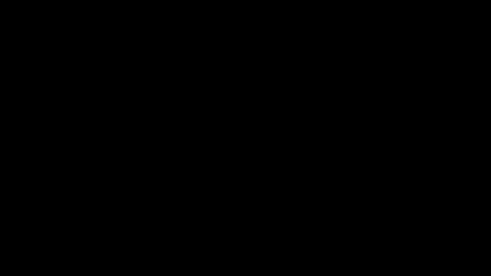

Leof, meaing "friend" in old English, is the namesake of the Leoffen Monthly Edition. We post monthly instilations to the Leoffen Monthly Edition, which is a collection of articles, essays, and papers (see more abt. types of installments below) that aim to gain perspective on a variety of scholarly or scholarly-adjacent topics.
"Rather than love, than money, than fame, give me truth."
-Henry David Thoreau
we live in a world where truth is increasingly rendered an afterthought in many regards. The line between fact and fiction is, and in truth has always been, in a state of flux. the Leof project aims to at least cause come kind of reflection and consideration of that blurred reality.
Leof is not one person, in truth everyone is a Leof. You reading this especially (I don't expect many to see this, so good on you!). We as humans have a remarkable ability to find community wherever we may be, and in part the Leof project is a celebration of that. Really though, the Leof project was started by RKM and at present is just comprised of RKM.
The Leoffen Monlthy Edition, being essentially a repository of written works, is structured according to the categorical classification of works. The classifications are as follows:
A heavy, inductive, provable analysis or argument concerning material observation of facts and the conclusions that can then be drawn from them. The academic paper is a broad category, and so can be a mix of analysis, experiment, rationale, and argument.
Overall a more heavy, academically oriented read.
More resembling traditional news articles, the article is a written work dedicated to an overall assessment or summary of a topic. These can (and likely will) be current events, or just as likely, esoteric topics that I found insightful or simply captivating.
A more casual read, suitable for a commute.
As we enter the more intellectually geared works, we have the treatise. In sum, the treatise is a discourse concerning one particular topic or concern. It aims to use acute rational deduction to illuminate the nature of said topic. Unlike the paper, the treatise deals more with theory than it does analysis.
For any who bore at the sight of quantitative and empirical interpretation.
I personally hold that the eastern tradition of meditative knowledge is one overlooked in the west. The poem is an abstract, interprative piece that aims to ilicit a kind of deeper, more intrinsic and spiritually textured knowledge than academic papers can.
Short, sweet, great for rumination.
The Substack Partition of the Leof Project is essentially the archive of monthly installments. All the articles you will find here you can also find on Substack.